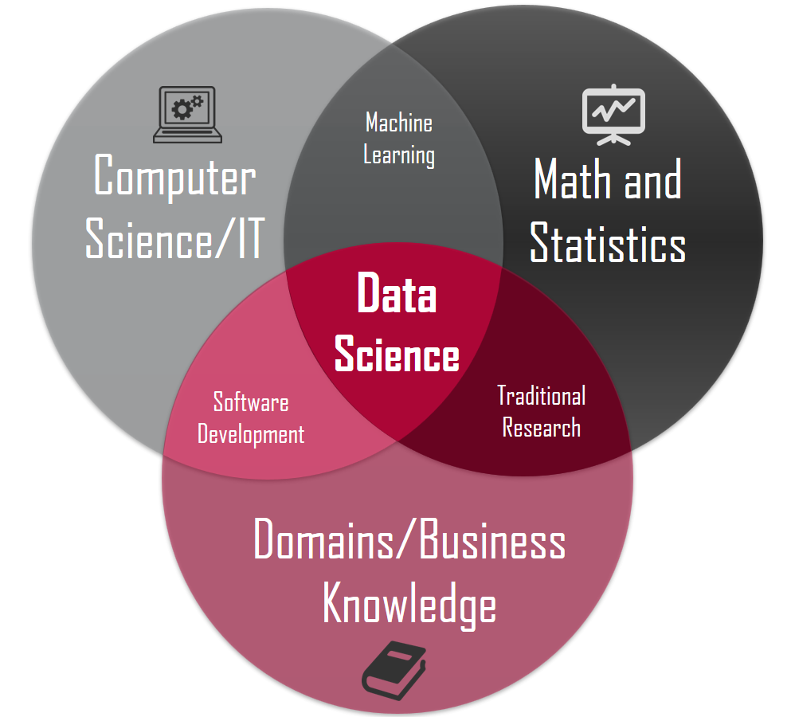
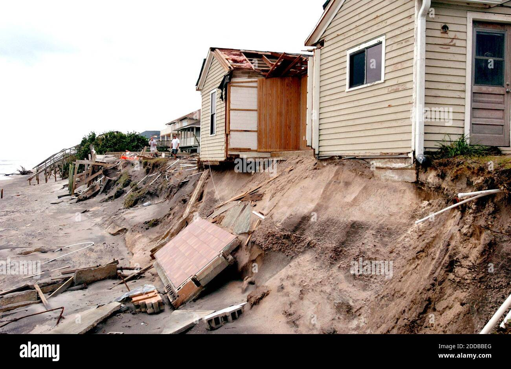
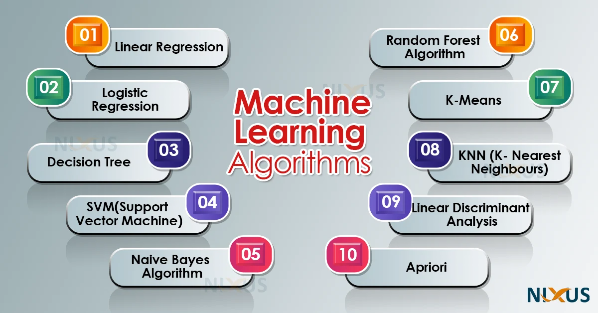
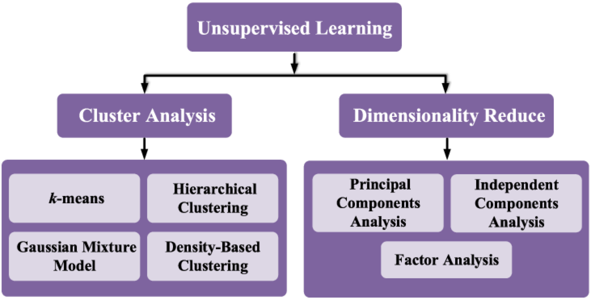

Introduction to Data Science
IN2004B: Generation of Value with Data Analytics
Agenda
- Data Science
- Supervised and Unsupervised Learning
Data Science
Data Science is …
a multidisciplinary field that uses scientific methods, processes, algorithms, and systems to extract knowledge and insights from vast amounts of structured and unstructured data.
. . .


Other Similar Concepts
Data mining is a process of discovering patterns in large data sets using methods at the intersection of statistics and database systems.
Predictive modeling is the process of developing a model so that we can understand and quantify the accuracy of the model’s prediction in yet-to-be-seen future data sets.
Statistical learning refers to a set of tools (statistical models and data mining methods) for modeling and understanding complex data sets.
In 2004…
Hurricane Frances battered the Caribbean and threatened to directly affect Florida’s Atlantic coast.
. . .


. . .
Residents headed for higher ground, but in Arkansas, Walmart executives saw a big opportunity for one of their newest data-driven weapons: predictive technology.
A week before the storm made landfall, Linda M. Dillman, Wal-Mart’s chief information officer, pressured her staff to create forecasts based on what had happened when Hurricane Charley hit the area several weeks earlier.
Backed by trillions of bytes of purchase history stored in Walmart’s data warehouse, he said, the company could “start predicting what’s going to happen, rather than waiting for it to happen,” as he put it.


The result
The New York Times reported
“… Experts analyzed the data and found that stores would indeed need certain products, not just the typical flashlights.”
Dillman said
“We didn’t know in the past that strawberry Pop-Tarts increase their sales, like seven times their normal sales rate, before a hurricane.”

Cross-Industry Standard Process (CRISP) for Data Science

CRISP Model
Business Understanding: What does the business need?
Data Understanding: What data do we have or need? Is it clean?
Data Preparation: How do we organize the data for modeling?
Modeling: What modeling techniques should we apply?
Evaluation: Which model best meets business objectives?
Implementation: How do stakeholders access the results?
Business Understanding
Business understanding refers to defining the business problem you are trying to solve.
The goal is to reframe the business problem as a data science problem.
Reframing the problem and designing a solution is often an iterative process.
Problems in Data Science
Classification (or class probability estimation) attempts to predict, for each individual in a population, which of a (small) set of classes that individual belongs to. For example, “Among all T-Mobile customers, which ones are likely to respond to a given offer?”
. . .
Regression attempts to estimate or predict, for each individual, the numerical value of some variable for that individual. For example, “How much will a given customer use the service?”
Clustering attempts to group individuals in a population based on their similarity, but not for any specific purpose. For example, “Do our customers form natural groups or segments?”
Discussion
Often, reframing the problem and designing a solution is an iterative process.
The initial formulation may not be complete or optimal, so multiple iterations may be necessary to formulate an acceptable solution.
The key to great success is creative problem formulation by an analyst on how to frame the business problem as one or more data science problems.
Data Understanding I
If the goal is to solve a business problem, data constitutes the raw material available from which the solution will be built.
The available data rarely matches the problem.
For example, historical data is often collected for purposes unrelated to the current business problem or without any explicit purpose.
Data Understanding II
- Data costs vary. Some data will be available for free, while others will require effort to obtain.
A key part of the data understanding phase is estimating the costs and benefits of each data source and deciding whether further investment is justified.
Even after acquiring all the data sets, compiling them may require additional effort.
Example
In the 1980s, credit cards were essentially priced uniformly because companies didn’t have adequate information systems to deal with differential pricing on a massive scale.
Around 1990, Richard Fairbanks and Nigel Morris realized that information technology was powerful enough to enable more sophisticated predictive models and offer different terms (today: pricing, credit limits, low introductory rate balance transfers, cash back, and loyalty points).
Signet Bank’s management was convinced that modeling profitability, not just the probability of default, was the right strategy.
They knew that a small proportion of customers actually account for more than 100% of a bank’s profit from credit card transactions (because the rest are either breaking even or losing money).
If they could model profitability, they could make better offers to the best customers and “skim the cream” of the big banks’ clientele.
But Signet Bank had a really big problem implementing this strategy.
They didn’t have the right data to model profitability for offering different terms to different customers!
Since the bank offered credit with a specific set of terms and a specific default model, they had the data to model profitability (1) for the terms they actually offered in the past, and (2) for the type of customer actually offered credit.
What could Signet Bank do? They put into play a fundamental data science strategy: acquire the necessary data at a cost!
In this case, data on customer profitability with different credit terms could be generated by conducting experiments. Different terms were randomly offered to different customers.
This might seem silly outside the context of data analytics thinking: you’re likely to lose money!
This is true. In this case, the losses are the cost of data acquisition.
What happened?
As expected, Signet’s number of bad accounts skyrocketed.
The losses continued for several years while data scientists worked to build predictive models from the data, evaluate them, and implement them to improve profits.
Because the company viewed these losses as investments in data, they persisted despite complaints from stakeholders.
Eventually, Signet’s credit card business turned around and became so profitable that it was spun off to separate it from the bank’s other operations, which were now overshadowing the success of its consumer lending business.
Richard Fairbanks and Nigel Morris
Founders of

Most Used Data Science Tools
- Python
- R
- SAS
- Excel
- Power BI
- Tableau
- Apache Spark
Other Tools Used
RapidMiner (https://rapidminer.com/products/studio/)
Trifacta (https://www.trifacta.com/)
BigML (https://bigml.com/)
MLBase (http://www.mlbase.org/)
Google Cloud AutoML (https://cloud.google.com/automl/)
Supervised and Unsupervised Learning
Terminology
Predictors. They are represented using the notation \(X_1\) for the first predictor, \(X_p\) for the second predictor, …, and \(X_p\) for the p-th predictor.
Response. \(Y\) represents the response variable, which we will attempt to predict.
. . .
We want to establish the following relationship
\[ Y = f(X_1, X_2, \ldots, X_p) + \epsilon, \]
where \(f\) is a function of the predictors and \(\epsilon\) is a natural (random) error.
Types of Learning
In data science (and machine learning), there are two main types of learning:
Supervised learning
Unsupervised learning

Supervised Learning…
Includes algorithms that learn by example. The user provides the supervised algorithm with a known data set that includes the corresponding known inputs and outputs. The algorithm must find a method to determine how to reach those inputs and outputs.
While the user knows the correct answers to the problem, the algorithm identifies patterns in the data, learns from observations, and makes predictions.
The algorithm makes predictions that can be corrected by the user, and this process continues until the algorithm reaches a high level of accuracy and performance.
Popular Supervised Algorithms


Unsupervised Learning…
studies data to identify patterns. There is no answer key or human operator to provide instruction. The machine determines correlations and relationships by analyzing the available data.
In this process, the unsupervised algorithm is left to interpret large data sets. The algorithm attempts to organize that data in some way to describe its structure.
As it evaluates more data, its ability to make decisions about it gradually improves and becomes more refined.
Popular Unsupervised Algorithms

Two Data Sets
In supervised learning, there are several types of data.
Training data is the data used to construct \(\hat{f}(\boldsymbol{X})\).
Test data is the data that was NOT used in the fitting process, but is used to test the model’s performance on unanalyzed data.

Yogi Berra
It’s though to make predictions, especially about the future.
Let’s Play
Let’s play with supervised models.